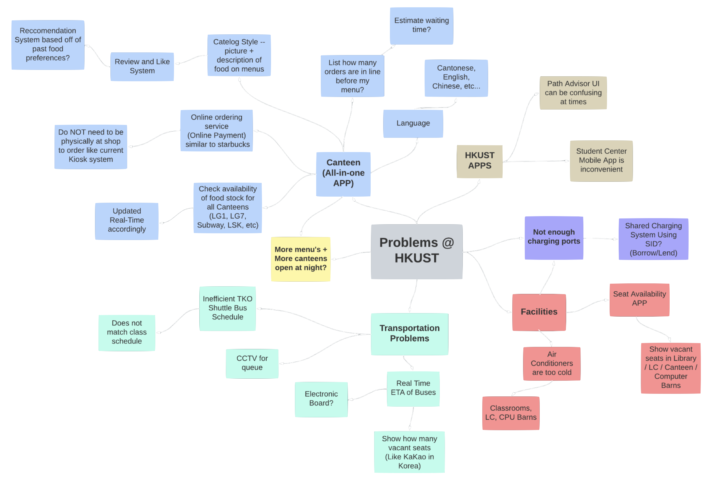

Jason Chan
CPEG '23
Project Documentation
Project 1: If food ordering on campus were more user-friendly
Video Summary
Brainstorming
Through our user empathising process, we compiled a variety of problems that students face every day on campus, and sorted them into 4 distinct categories:
- Canteen (All-in-one ordering app)
- HKUST Apps (PathAdvisor, Student Center-related troubles)
- Transportation (TKO Shuttle bus / commercial bus schedules, seat vacancies, etc.)
- Facilities (Lecture hall / room seat availability, device charging, air-conditing troubles)
The Problem
- Lines are too long especially right after classes have just concluded
- Food items are regularly sold-out, so after waiting in line it's possible that your desired order is no longer available for purchase
- The menu is not informative enough
Persona
We created a persona - Steve - to inform the different design choices for our prototype app. As an international exchange student, Steve can't communicate with the predominantly Chinese-speaking staff in their native tongue, nor is he familiar with the cuisine - the most prevalent one across all of HKUST's dining choices. Specific dietary restrictions are also not properly catered to in most cases, with information for vegans / vegetarians such as himself and people with allergies not being readily available. With little time between classes, he also finds it inconvenient to wait for such long periods of time before being served his food.

Design Goals
Storyboarding

Project 2
TBC
Project 3
TBC